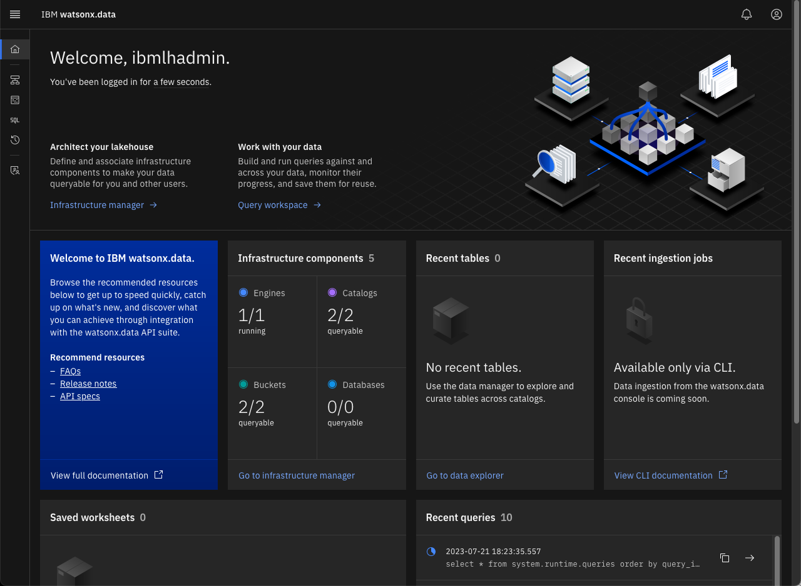

IBM watsonx.data Introduction
IBM watsonx.data is based on open source PrestoDB, a distributed query engine that enables querying data stored in open file formats using open table formats for optimization or performance. Some of the characteristics which you will learn and see in action include:
- Compute processing is performed in memory and in parallel.
- Data is pipelined between query stages and over the network reducing latency overhead that one would have if disk I/O were involved.
All the below tasks will be done using the Developer edition of IBM watsonx.data.
Using IBM watsonx.data
Connectivity to IBM watsonx.data can be done using the following methods:
- Command line interface(CLI)
- ODBC drivers
- Windows, Linux, OSX
- JDBC drivers
- Analytics API through StepZen
- IBM watsonx.data UI
Connecting to IBM watsonx.data and executing queries using CLI
Open the IBM watsonx.data CLI using the development directory. Make sure you are the root user.
whoami
If not, switch to the root user.
sudo su -
Change to the development directory.
cd /root/ibm-lh-dev/bin
Start the Presto CLI.
./presto-cli.sh
We are going to inspect the available catalogs in the IBM watsonx.data system. An IBM watsonx.data catalog contains schemas and references a data source via a connector. A connector is like a driver for a database. IBM watsonx.data connectors are an implementation of Presto’s SPI which allows Presto to interact with a resource. There are several built-in connectors for JMX, Hive, TPCH etc., some of which you will see/use as part of the labs.
Display the catalogs.
show catalogs;
Catalog
---------------
hive_data
iceberg_minio
jmx
system
tpcds
tpch
(6 rows)
Let's look up what schemas are available with any given catalog. We will use the TPCH catalog which is an internal PrestoDB auto-generated catalog and look at the available schemas.
show schemas in tpch;
Schema
--------------------
information_schema
sf1
sf100
sf1000
sf10000
sf100000
sf300
sf3000
sf30000
tiny
(10 rows)
Quit the presto-cli interface by executing “quit;” command. quit; You can connect to a specific catalog and schema and look at the tables etc.
./presto-cli.sh --catalog tpch --schema tiny
presto:tiny>
You will notice that the Presto prompt includes the name of the schema we are currently connected to. Look at the available tables in the TPCH catalog under tiny schema.
show tables;
Table ---------- customer lineitem nation orders part partsupp region supplier (8 rows)
Inspect schema of the customer table.
describe customer;
Column | Type | Extra | Comment ------------+--------------+-------+--------- custkey | bigint | | name | varchar(25) | | address | varchar(40) | | nationkey | bigint | | phone | varchar(15) | | acctbal | double | | mktsegment | varchar(10) | | comment | varchar(117) | | (8 rows)
You could also use the below to achieve the same result.
show columns from customer;
Column | Type | Extra | Comment ------------+--------------+-------+--------- custkey | bigint | | name | varchar(25) | | address | varchar(40) | | nationkey | bigint | | phone | varchar(15) | | acctbal | double | | mktsegment | varchar(10) | | comment | varchar(117) | | (8 rows)
Inspect available functions.
show functions like 'date%';
Function | Return Type | Argument Types > -------------+--------------------------+--------------------------------------------------> date | date | timestamp > date | date | timestamp with time zone > date | date | varchar(x) > date_add | date | varchar(x), bigint, date > date_add | time | varchar(x), bigint, time > date_add | time with time zone | varchar(x), bigint, time with time zone > date_add | timestamp | varchar(x), bigint, timestamp > date_add | timestamp with time zone | varchar(x), bigint, timestamp with time zone > date_diff | bigint | varchar(x), date, date > date_diff | bigint | varchar(x), time with time zone, time with time z> date_diff | bigint | varchar(x), time, time > date_diff | bigint | varchar(x), timestamp with time zone, timestamp w> date_diff | bigint | varchar(x), timestamp, timestamp > date_format | varchar | timestamp with time zone, varchar(x) > date_format | varchar | timestamp, varchar(x) > date_parse | timestamp | varchar(x), varchar(y) > date_trunc | date | varchar(x), date > date_trunc | time | varchar(x), time > date_trunc | time with time zone | varchar(x), time with time zone > date_trunc | timestamp | varchar(x), timestamp > date_trunc | timestamp with time zone | varchar(x), timestamp with time zone > (21 rows)
Switch to a different schema.
use sf1;
Display the Tables in the schema.
show tables;
Table ---------- customer lineitem nation orders part partsupp region supplier (8 rows)
Query data from customer table.
select * from customer limit 5;
custkey | name | address | nationkey | > ---------+--------------------+------------------------------------------+-----------+-----> 75001 | Customer#000075001 | iQyegZCktrxX8jMFs9ip | 3 | 13-8> 75002 | Customer#000075002 | TRzWtXys54mXmbNLlZQ4UR,5VkzA4Ycjsx | 24 | 34-1> 75003 | Customer#000075003 | OVaJQHekQKFzsjqYpkLD | 24 | 34-4> 75004 | Customer#000075004 | DM8SVyMtxAqxUhSFtMoYXSwAPRi,rCxLHaCbSSKF | 14 | 24-2> 75005 | Customer#000075005 | UFagIiT4yLXrlK4,KpBFwt7Pa5egjXuWw8 P6u,S | 1 | 11-4> (5 rows)
Gather statistics on given table.
show stats for customer;
column_name | data_size | distinct_values_count | nulls_fraction | row_count | low_value> -------------+-------------+-----------------------+----------------+-----------+----------> custkey | NULL | 150039.0 | 0.0 | NULL | 1 > name | 2700000.0 | 149980.0 | 0.0 | NULL | NULL > address | 3758056.0 | 150043.0 | 0.0 | NULL | NULL > nationkey | NULL | 25.0 | 0.0 | NULL | 0 > phone | 2250000.0 | 150018.0 | 0.0 | NULL | NULL > acctbal | NULL | 140166.0 | 0.0 | NULL | -999.99 > mktsegment | 1349610.0 | 5.0 | 0.0 | NULL | NULL > comment | 1.0876099E7 | 149987.0 | 0.0 | NULL | NULL > NULL | NULL | NULL | NULL | 150000.0 | NULL > (9 rows)
Quit Presto.
quit;
Using the IBM watsonx.data console UI
Open your browser and navigate to:
- IBM watsonx.data UI - https://ussouth.techzone-services.com:xxxxx
- VMWare Image - https://localhost:9443/
The login screen is shown.

Click “Log in” with username ibmlhadmin password: password
Note: With the IBM watsonx.data Developer version everything is already pre-provisioned as part of the system start up. Console UI is still under construction, but you will be able to navigate the different screens and experience it.
Using the Presto console UI
The PrestoDB console UI can be accessed from:
- Presto console - http://ussouth.techzone-services.com:xxxxx
- VMWare Image - http://localhost:8080/ui
The Presto console allows you to do the following:
- Monitor state of the cluster
- Queries being executed
- Queries in queue
- Data throughput
- Query details (text and plan)
On the main Presto screen, click the Finished Button (middle of the screen).
A list of finished queries will display below the tab bar. You can scroll through the list of queries and get details of the execution plans. If you scroll through the list, you should see the test query "select * from customer limit 5".
Click on the query ID to see details of the execution plan that Presto produced.
You can get more information about the query by clicking on any of the tabs that are on this screen. For instance, the Live Plan tab will show a visual explain of the stages that the query went through during execution.
Using the MinIO console UI
MinIO is a high-performance, S3 compatible object store. Rather than connect to an external S3 object store, we are going to use MinIO locally to run with IBM watsonx.data.
To connect to MinIO, you will need to get the MinIO credentials by querying the docker container.
export LH_S3_ACCESS_KEY=$(docker exec ibm-lh-presto printenv | grep LH_S3_ACCESS_KEY | sed 's/.*=//')
export LH_S3_SECRET_KEY=$(docker exec ibm-lh-presto printenv | grep LH_S3_SECRET_KEY | sed 's/.*=//')
echo "MinIO Userid : " $LH_S3_ACCESS_KEY
echo "MinIO Password: " $LH_S3_SECRET_KEY
MinIO Userid : c4643026087cc21989eb5c12 MinIO Password: 93da45c5af87abd86c9dbc83
Open your browser and navigate to:
- Minio console - http://ussouth.techzone-services.com:xxxxx
- VMWare Image - http://localhost:9001/
Login with object store credentials found above (These will be different for your system). You should see current buckets in MinIO (next page).
Creating Schemas and Tables
Not all catalogs support creation of schemas - as an example, the TPCH catalog is not writeable. We will use the iceberg_minio catalog for this exercise. We will need to get some details before we continue.
Login to the Presto CLI.
./presto-cli.sh --catalog iceberg_minio
Create schema workshop in catalog iceberg_minio.
CREATE SCHEMA IF NOT EXISTS workshop with (location='s3a://dev-bucket-01/');
Show the schemas available.
show schemas;
Schema ---------- workshop (1 row)
Use the Workshop Schema.
use workshop;
Creating tables
Create a new Apache Iceberg table using existing data in the sample Customer table as part of the TPCH catalog schema called TINY.
create table customer as select * from tpch.tiny.customer;
Show the tables.
show tables;
Table ---------- customer (1 row)
Quit Presto.
quit;
Refresh the Minio screen (see button on the far-right side).
You should now see new objects under dev-bucket-01. Click on the bucket name and you will see the customer table.
Selecting the customer object will show that there is data and metadata in there.
How do we know that this data is based on Apache iceberg? If you open the file under metadata, you should see metadata information for the data we are storing in parquet file format.
Do I really need Apache Iceberg?
YES, YOU DO! however it is good to understand why? Metadata is also stored in the Parquet file format but only for the single parquet file. If we add more data/partitions, the data is split into multiple Parquet files, and we don’t have a mechanism to get the table to parquet files mapping. Run the following example to understand this better. You need to get the access keys for MinIO before running the following lab.
export LH_S3_ACCESS_KEY=$(docker exec ibm-lh-presto printenv | grep LH_S3_ACCESS_KEY | sed 's/.*=//')
export LH_S3_SECRET_KEY=$(docker exec ibm-lh-presto printenv | grep LH_S3_SECRET_KEY | sed 's/.*=//')
Open the developer sandbox to connect to MinIO, download selected parquet file and inspect the parquet file.
./dev-sandbox.sh
List all files in the object store (MinIO).
/scripts/s3-inspect.py --host ibm-lh-minio-svc:9000 --accessKey $LH_S3_ACCESS_KEY --secretKey $LH_S3_SECRET_KEY --bucket dev-bucket-01
dev-bucket-01 b'customer/data/e9536a5e-14a1-4823-98ed-cc22d6fc38db.parquet' 2023-06-06 14:31:47.778000+00:00 6737d7268fcb3eb459b675f27f716f48 75373 None dev-bucket-01 b'customer/metadata/00000-e26c56e0-c4d7-4625-8b06-422429f6ba8d.metadata.json' 2023-06-06 14:31:48.629000+00:00 2e722c7dd83c1dd260a7e6c9503c0e04 3272 None dev-bucket-01 b'customer/metadata/7cb074a4-3da7-4184-9db8-567383bb588a-m0.avro' 2023-06-06 14:31:48.401000+00:00 655a5568207cc399b8297f1488ef77e7 6342 None dev-bucket-01 b'customer/metadata/snap-6143645832277262458-1-7cb074a4-3da7-4184-9db8-567383bb588a.avro' 2023-06-06 14:31:48.445000+00:00 0c3714299d43ae86a46eabdcaac1351e 3753 NonePARQUET=$(/scripts/s3-inspect.py --host ibm-lh-minio-svc:9000 --accessKey $LH_S3_ACCESS_KEY --secretKey $LH_S3_SECRET_KEY --bucket dev-bucket-01 | grep -o '.*parquet' | sed -n "s/.*b'//p")You can extract the string with the following syntax.
The file name that is retrieved is substituted into the next command. Note: The file name found in $PARQUET will be different on your system.
/scripts/s3-download.py --host ibm-lh-minio-svc:9000 --accessKey $LH_S3_ACCESS_KEY --secretKey $LH_S3_SECRET_KEY --bucket dev-bucket-01 --srcFile $PARQUET --destFile /tmp/x.parquet
Describe the File Contents.
/scripts/describe-parquet.py /tmp/x.parquet
---------------------- metadata:created_by: num_columns: 8 num_rows: 1500 num_row_groups: 1 format_version: 1.0 serialized_size: 851 ---------------------- ---------------------- schema: custkey: int64 name: binary address: binary nationkey: int64 phone: binary acctbal: double mktsegment: binary comment: binary ---------------------- ---------------------- row group 0: num_columns: 8 num_rows: 1500 total_byte_size: 74555 ---------------------- ---------------------- row group 0, column 1: file_offset: 0 file_path: physical_type: BYTE_ARRAY num_values: 1500 path_in_schema: name is_stats_set: True statistics: has_min_max: False min: None max: None null_count: 0 distinct_count: 0 num_values: 1500 physical_type: BYTE_ARRAY logical_type: None converted_type (legacy): NONE compression: GZIP encodings: ('DELTA_BYTE_ARRAY',) has_dictionary_page: False dictionary_page_offset: None data_page_offset: 112 total_compressed_size: 599 total_uncompressed_size: 2806 ----------------------
Note: In this instance we used an insert into select * from customer with no partitioning defined so there was only 1 parquet file and only 1 row group. This is not the norm, and we deliberately did this to show you the value of using Apache Iceberg file format which can be used by multiple runtimes to access Iceberg data stored in parquet format and managed by hive metastore.
Exit from the Sandbox.
exit
System Connector
The System connector provides information and metrics about the currently running Presto cluster. It makes this available via normal SQL queries.
Start the Presto CLI.
./presto-cli.sh
What queries are currently running?
select * from "system".runtime.queries;
What tasks make up a query and where is the task running?
select * from "system".runtime.tasks;
Quit Presto.
quit;
Connecting to and executing queries using JDBC You could use any tool that supports connectivity through JDBC drivers, but we chose to use dBeaver. dBeaver was already configured in a previous lab. Use the dBeaver tool to view to navigate the different catalogs, schemas and query the data stored in the different tables. Check the iceberg_minio schema and search for the customer table you created in an earlier step.